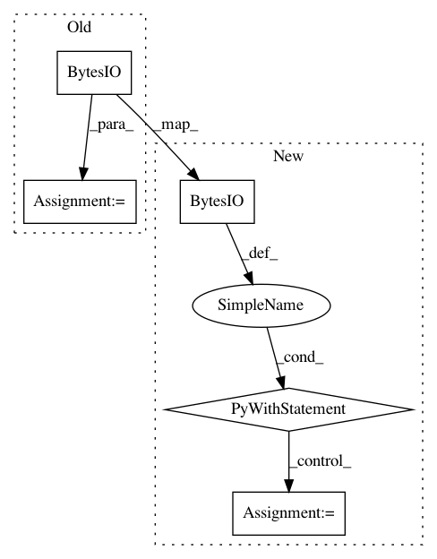

f4a6c738beabc312a848804e5c4d4f384919f026,tensorboardX/summary.py,,audio,#Any#Any#Any#,394
Before Change
import io
import wave
import struct
fio = io.BytesIO()
Wave_write = wave.open(fio, "wb")
Wave_write.setnchannels(1)
Wave_write.setsampwidth(2)
Wave_write.setframerate(sample_rate)
tensor_enc = b""
After Change
length_frames, num_channels = tensor.shape
assert num_channels == 1 or num_channels == 2, "The second dimension should be 1 or 2."
with io.BytesIO() as fio:
soundfile.write(fio, tensor, samplerate=sample_rate, format="wav")
audio_string = fio.getvalue()
audio = Summary.Audio(sample_rate=sample_rate,
num_channels=num_channels,
length_frames=length_frames,
encoded_audio_string=audio_string,
In pattern: SUPERPATTERN
Frequency: 4
Non-data size: 5
Instances
Project Name: lanpa/tensorboardX
Commit Name: f4a6c738beabc312a848804e5c4d4f384919f026
Time: 2020-06-29
Author: prafullasd@gmail.com
File Name: tensorboardX/summary.py
Class Name:
Method Name: audio
Project Name: matplotlib/matplotlib
Commit Name: 39fb7b5b96ea46aca94099d166106365eaf0647e
Time: 2018-03-08
Author: anntzer.lee@gmail.com
File Name: lib/matplotlib/tests/test_backend_ps.py
Class Name:
Method Name: test_savefig_to_stringio
Project Name: pandas-dev/pandas
Commit Name: fc9fdba6592bdb5d0d1147ce4d65639acd897565
Time: 2021-02-12
Author: twoertwein@users.noreply.github.com
File Name: pandas/tests/io/parser/test_network.py
Class Name: TestS3
Method Name: test_read_csv_handles_boto_s3_object
Project Name: MLWave/kepler-mapper
Commit Name: 3048096493b85388ca00fc87c052e99767bddfc3
Time: 2021-03-04
Author: dave@daveeargle.com
File Name: examples/plot_digits.py
Class Name:
Method Name: